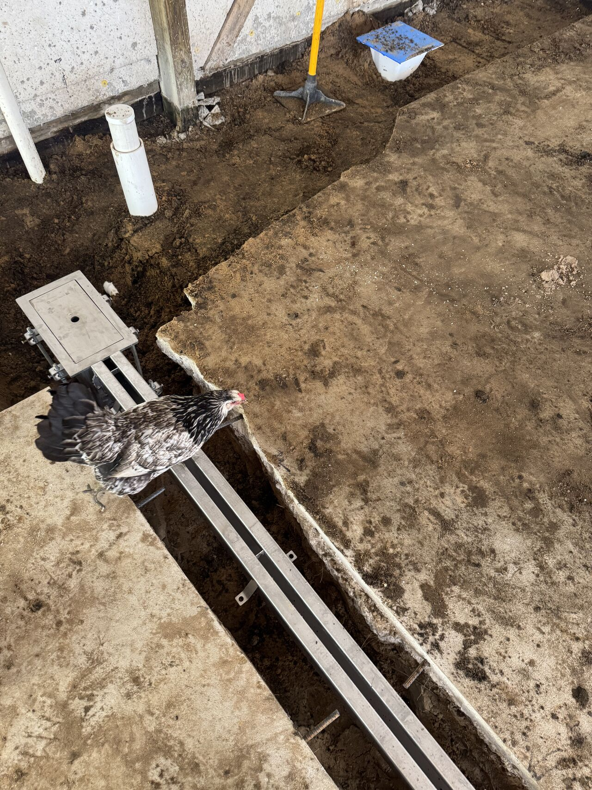
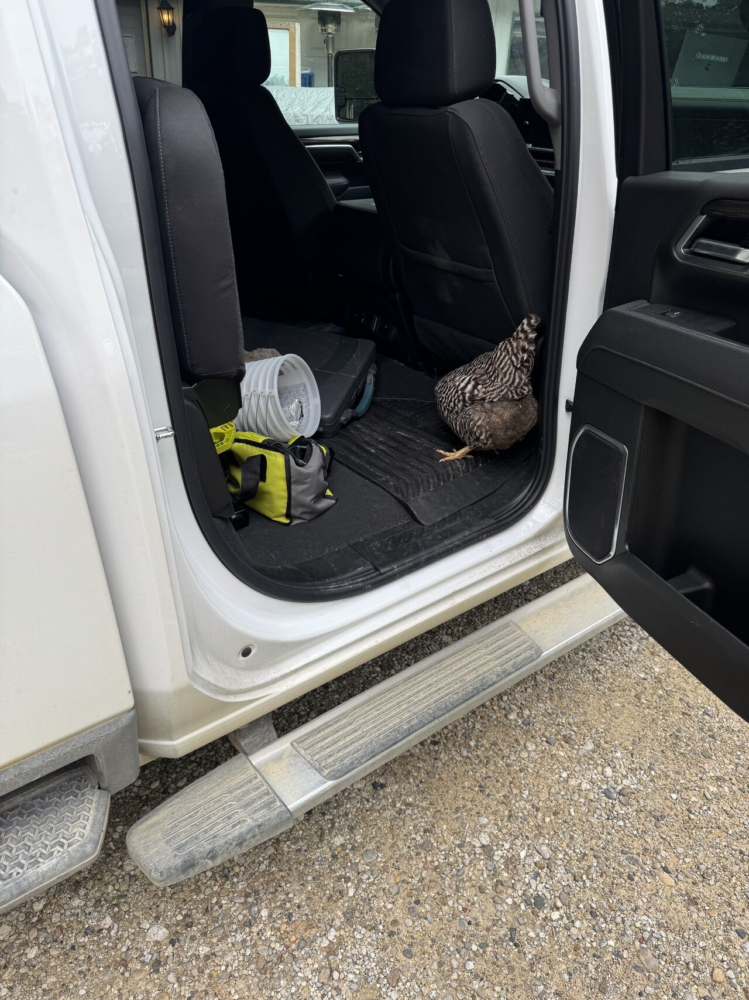

We had some fun with a Global Drain Technologies slot drain install at a winery this week. Tyler stopped by to check on the crew and found that somebody had already promoted herself to site inspector.

She walked the run, checked the catch basin, and then let herself into Tyler's truck to go through the tool bag. We have put floors in a lot of poultry plants over the years. This was the first time one of them ran the inspection.
Drains and Floors Belong Together
The joke was easy, but the work still matters. Drain layout, catch basin placement, slope, patching, and the resinous floor system all have to work as one detail. If the drain and floor are treated like separate scopes that meet for the first time on site, the plant is the one that usually pays for it later.
That is why SaniCrete handles drain and resinous floor work as a coordinated crew whenever the project calls for it. The details are cleaner, the schedule is easier to control, and there is one accountable team when the room needs to go back into service.

Same Crew, Cleaner Handoff
A sanitary floor is not just the surface you see at the end. It is the way water moves, the way edges terminate, the way drains tie in, and the way the whole room can be cleaned without fighting bad details.
Need a drain and a resinous floor put in by the same crew? Give us a ring. Chicken not included.